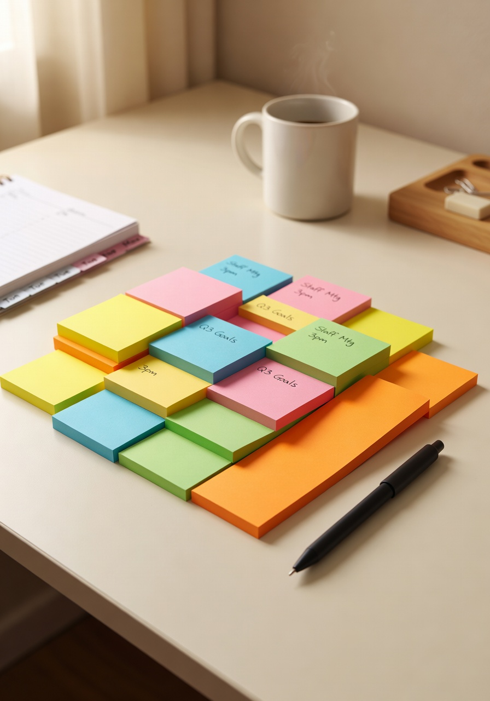
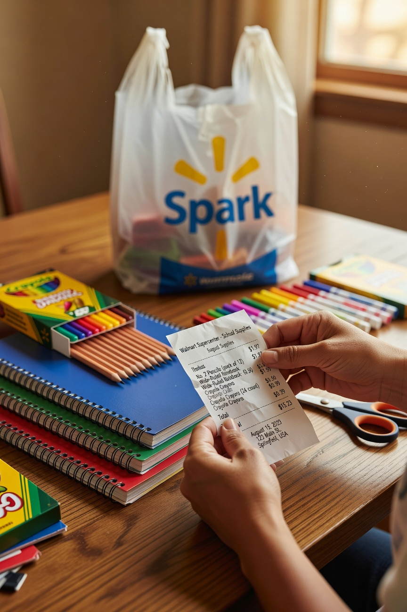

Every September, without fail, someone in my life who is not a teacher finds out that I spend my own money on classroom supplies and reacts like I have just told them I enjoy doing taxes for fun.
“They don’t give you that stuff?” No, not all of it. “Don’t you get a stipend?” Yes, a small one. “And you still spend more?” Yes. Every year. Happily.
Here is the thing: my classroom is where I spend a huge chunk of my waking life. The kids who come through my door deserve a space that works -- that is organized, that has the supplies they need, that feels like somewhere worth showing up to. That matters to me more than keeping a few extra dollars in my pocket. So yes, I spend my own money. I have made my peace with it.
The Things I Buy Every Year No Matter What
Dry erase markers. I go through these constantly. The ones the school provides are fine but I have a brand I love and I just buy them myself. A big pack lasts me most of the year.

Sticky notes in every size. I use them for everything -- student feedback, lesson reminders, my own notes, spontaneous anchor charts. I keep a stash in my desk drawer that I guard carefully.
Pencils. I know the school provides pencils. I know this. And yet there is always a pencil crisis at the exact wrong moment and I have learned to maintain my own emergency supply. Lesson learned many times over.
Classroom storage bins. These are the backbone of my organizational system. Clear bins with labels for everything -- supplies, student materials, the various things that accumulate in a classroom over time. Organization is my love language and my classroom reflects that.
The Things I Buy to Make the Room Feel Like a Place
A small lamp. Overhead fluorescent lighting is not my friend or my students’ friend. I have a small lamp in the corner that I turn on during independent reading time and it changes the whole atmosphere. Students notice. Small investment, big return.
A few plants. I kill plants with some regularity but I keep trying because the ones that survive make the classroom feel alive and cared for. Low maintenance varieties only. I have learned this lesson the hard way several times.
The Things I Have Learned to Wait On

Anything decorative -- bulletin board supplies, themed items, seasonal decor -- I wait until it goes on clearance after the back to school rush. It all works just as well in October as it does in August and costs significantly less.
The Truth About It
The right classroom environment makes my students more comfortable and more ready to learn. That is worth something. I track what I spend and I am intentional about it, but I do not apologize for it.
If you are a fellow teacher reading this -- I see you. I know you do this too. We should talk about it more.
-- Christin Marie